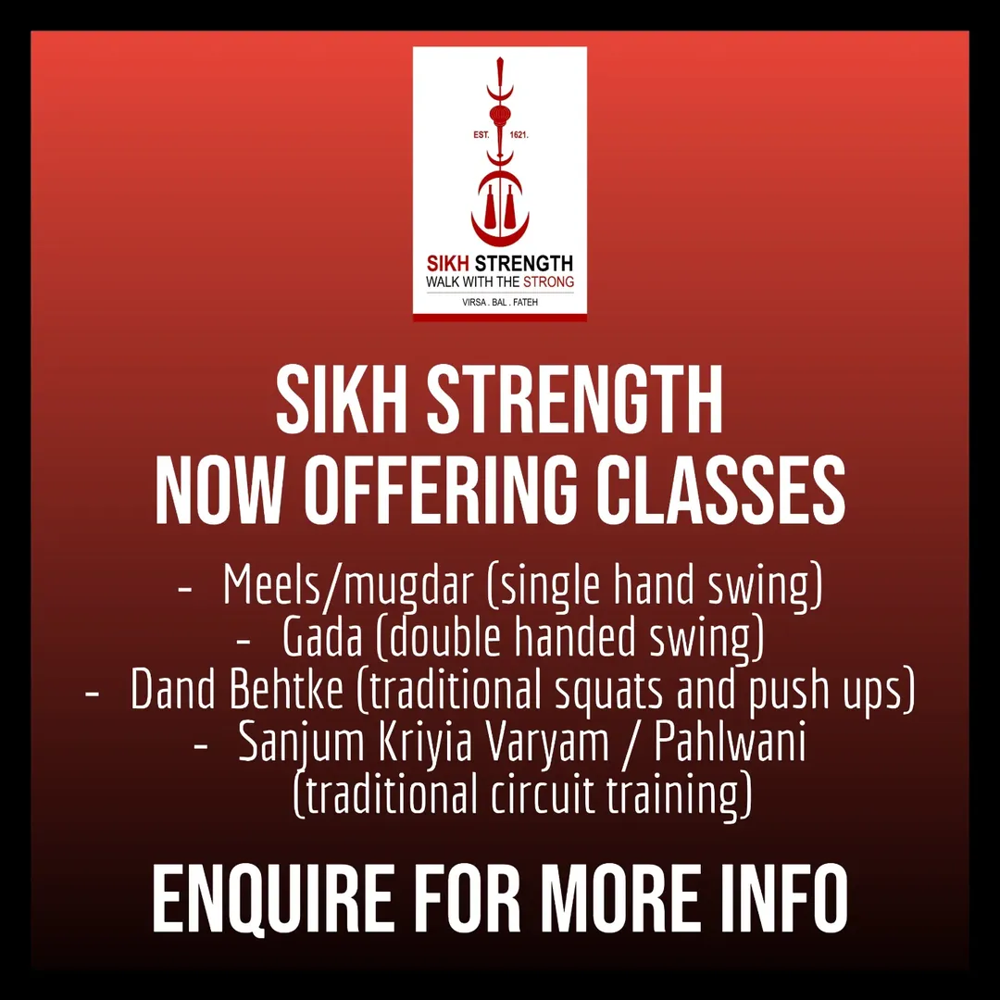
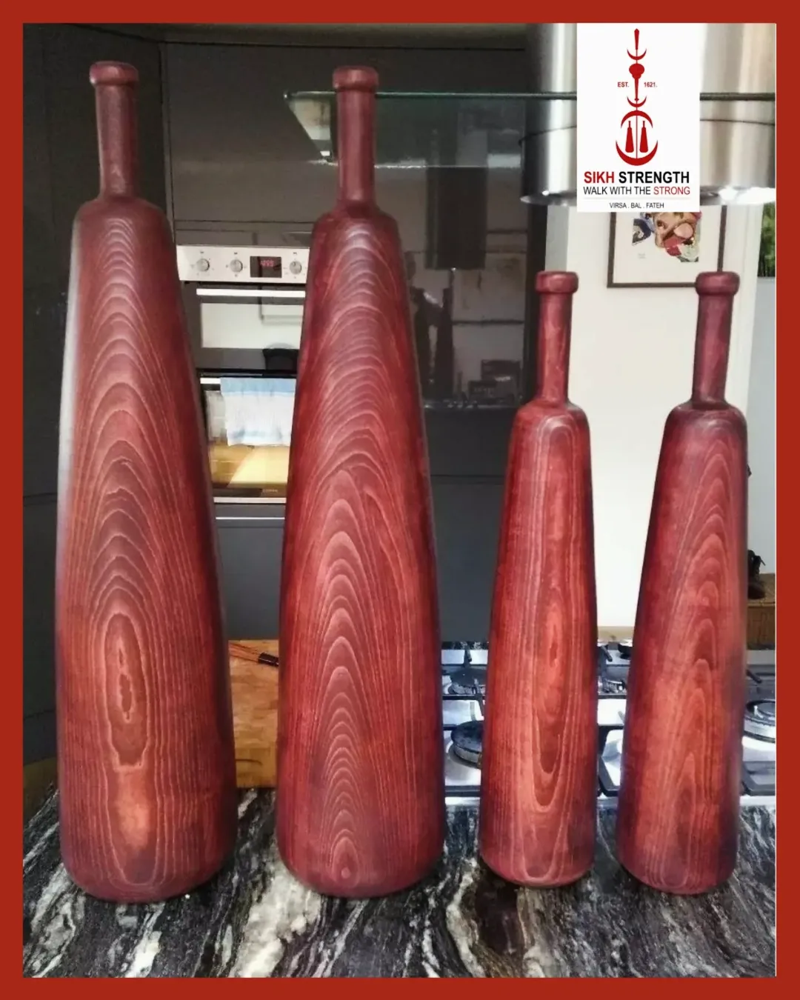
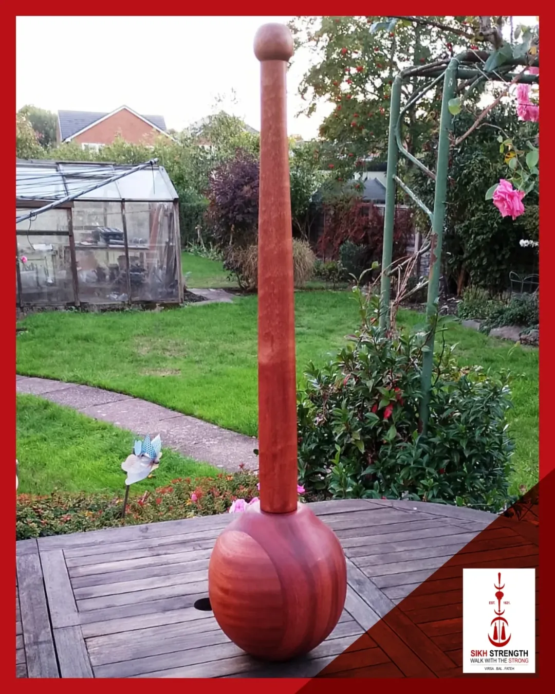
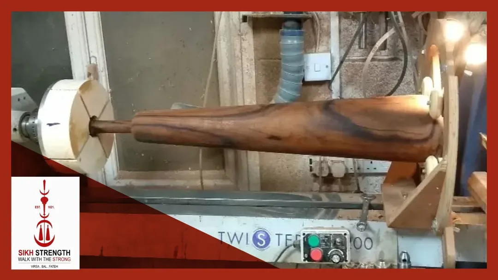
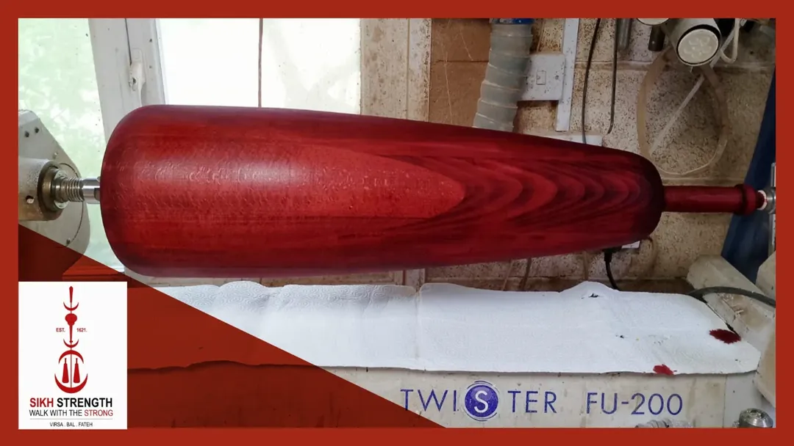

The Institute of Authentic Sikh Martial Heritage
Get in TouchTake the Sikh Warrior tradition into your hands, and churn Bir Ras. Established in 1621 after Guru Hargobinds first battle, Sikh Strength was forged on the battlefield and honed in the Akhara tradition.
These are not just training tools, these are a direct line to our Gurus, and their Titanic Warriors - Pahaar Pursh Khalseh. A living tradition, each swing, a Sikh Warrior roars out Vaheguru.
Each item is crafted with Prem, hand finished and balanced for the connoisseur and worshipper of Strength - Bal Bhagat.
The probem we solve, is sangat having access at far more competitive prices, without comprising on quality. Traditionally, these tools of spirituality were passed down in the family. Each item is fully customisable, empowering you to make your family heirlooms personal to you.

For single-handed swings, 2kg is a safe starting weigth for anyone new to club training. The reason is that controlling a weight moving with velocity in circular arcs can otherwise risk injury.
If you're already strong and have some training experience, a good starting point is around 6kg for men and 4kg for women, which should provide an adequate challenge
If you buy a meel that feels too heavy, you can begin by swinging it with both hands, and then progress to single-handed swings as your strength and control improve.
For some swings, a heavier meel can be managed, while others require a lighter one.
Generally, the closer the elbow stays to the body during the swing - such as when the meel passes over the shoulder and near the ear - the heavier the weight that can be used, as the lever is shorter.
This positioning recruits larger pulling muscles, especially lats and teres major.
The higher the meel is swung (e.g. overhead swings), the lighter the weight should be. These variations emphasise the rear delts and the trapezius (upper, middle, and lower fibres).
This difference comes down to elbow position: when the elbow stays closer to the body, larger muscles such as the lats provide more stability, allowing for heavier meels.
When the elbow is higher, further from the body, and longer lever arm, stability relies more on the upper back, requiring lighter meels. Regardless of the variation, all swings will develop the rotator cuff, grip, and forearms.



